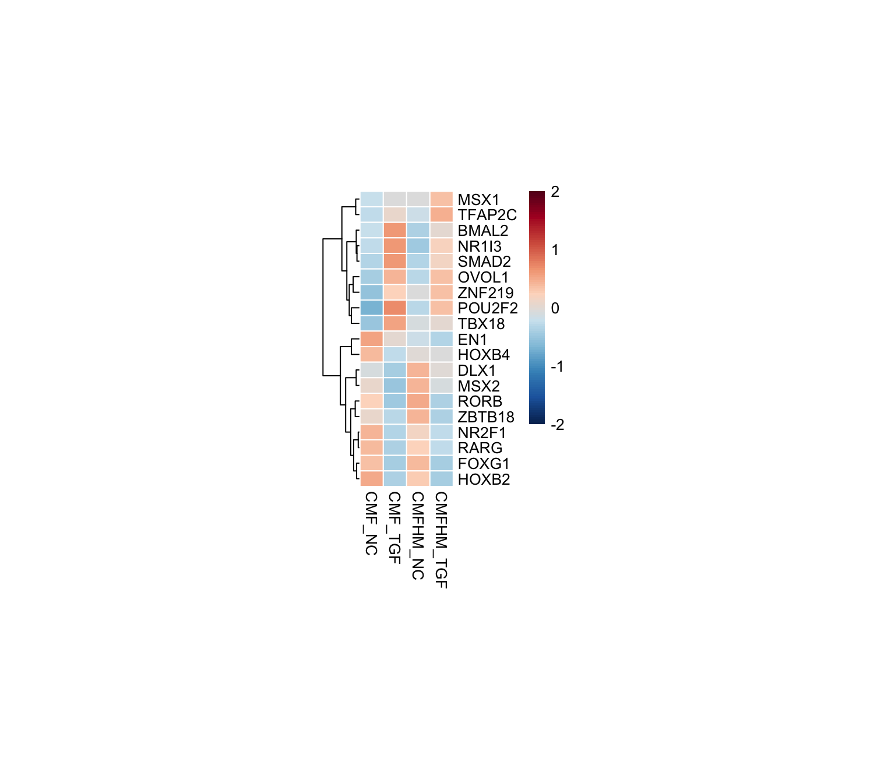
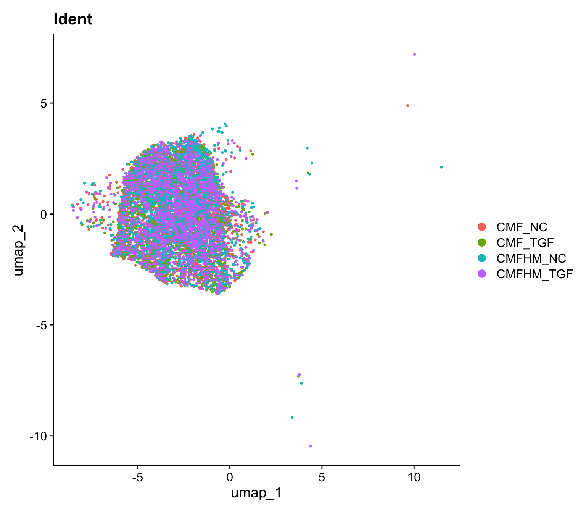
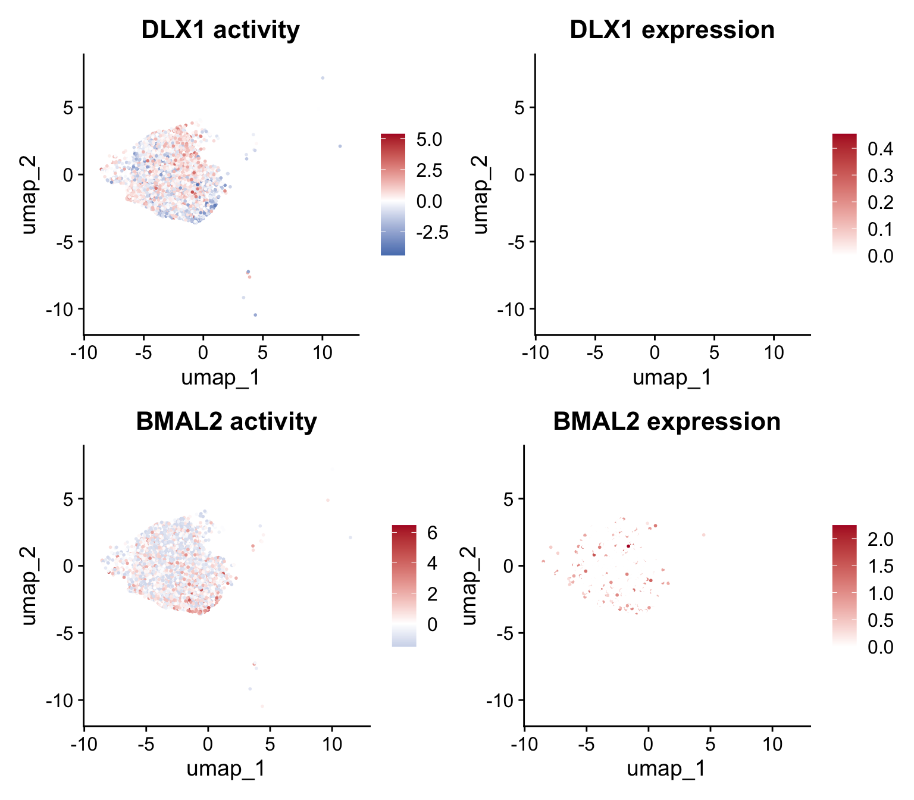
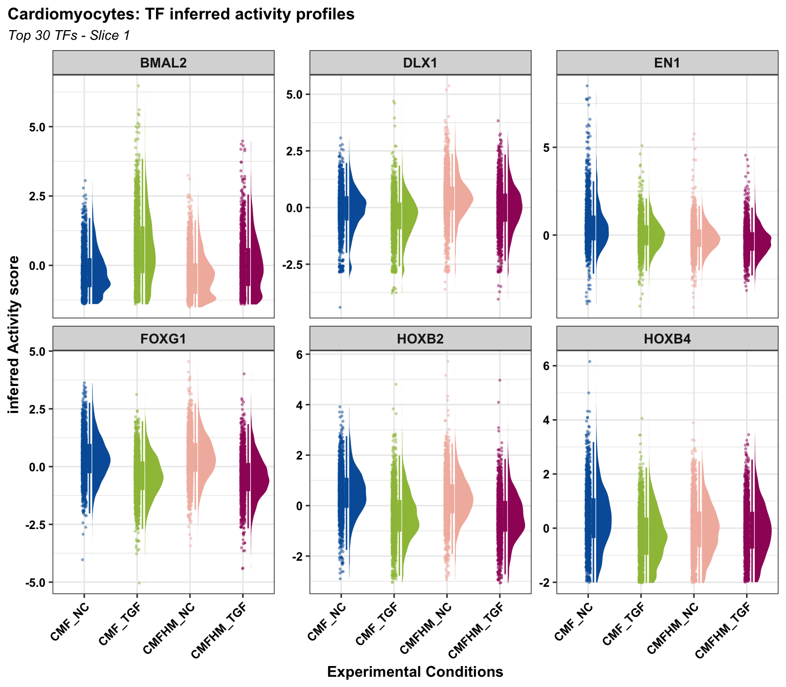
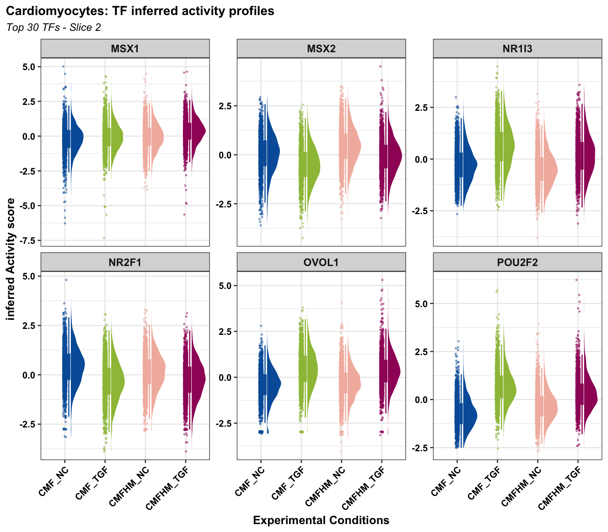
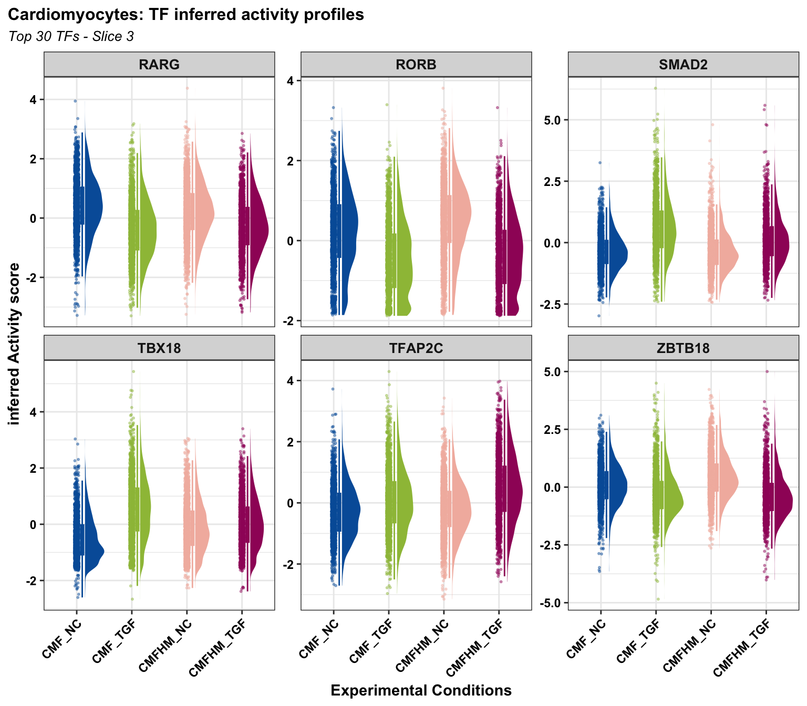
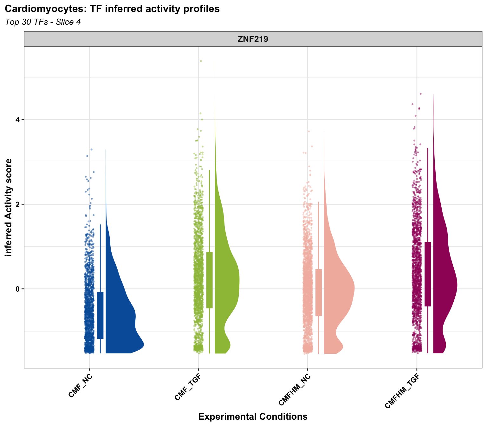

Last updated: 2026-10-28
Checks: 7 0
Knit directory: MT_Project/
This reproducible R Markdown analysis was created with workflowr (version 1.7.2). The Checks tab describes the reproducibility checks that were applied when the results were created. The Past versions tab lists the development history.
Great! Since the R Markdown file has been committed to the Git repository, you know the exact version of the code that produced these results.
Great job! The global environment was empty. Objects defined in the global environment can affect the analysis in your R Markdown file in unknown ways. For reproduciblity it’s best to always run the code in an empty environment.
The command set.seed(20260612) was run prior to running
the code in the R Markdown file. Setting a seed ensures that any results
that rely on randomness, e.g. subsampling or permutations, are
reproducible.
Great job! Recording the operating system, R version, and package versions is critical for reproducibility.
Nice! There were no cached chunks for this analysis, so you can be confident that you successfully produced the results during this run.
Great job! Using relative paths to the files within your workflowr project makes it easier to run your code on other machines.
Great! You are using Git for version control. Tracking code development and connecting the code version to the results is critical for reproducibility.
The results in this page were generated with repository version ae7eaec. See the Past versions tab to see a history of the changes made to the R Markdown and HTML files.
Note that you need to be careful to ensure that all relevant files for
the analysis have been committed to Git prior to generating the results
(you can use wflow_publish or
wflow_git_commit). workflowr only checks the R Markdown
file, but you know if there are other scripts or data files that it
depends on. Below is the status of the Git repository when the results
were generated:
Ignored files:
Ignored: .DS_Store
Ignored: .Rhistory
Ignored: .Rproj.user/
Ignored: analysis/.DS_Store
Ignored: analysis/.Rhistory
Ignored: analysis/omnipathr-log/
Ignored: omnipathr-log/
Untracked files:
Untracked: analysis/Mac_TF_inferrence.Rmd
Untracked: analysis/TF_inferrence.Rmd
Unstaged changes:
Modified: .gitignore
Note that any generated files, e.g. HTML, png, CSS, etc., are not included in this status report because it is ok for generated content to have uncommitted changes.
These are the previous versions of the repository in which changes were
made to the R Markdown (analysis/CM_TF_inferrence.Rmd) and
HTML (docs/CM_TF_inferrence.html) files. If you’ve
configured a remote Git repository (see ?wflow_git_remote),
click on the hyperlinks in the table below to view the files as they
were in that past version.
| File | Version | Author | Date | Message |
|---|---|---|---|---|
| Rmd | ae7eaec | Sophie.Alice | 2026-10-28 | adding initial TF inference |
rm(list=ls())
gc() used (Mb) gc trigger (Mb) limit (Mb) max used (Mb)
Ncells 907630 48.5 1752368 93.6 NA 1321070 70.6
Vcells 1597511 12.2 8388608 64.0 16384 2393637 18.3library(readr)
library(dplyr)
library(ggplot2)
library(Seurat)
library(hdf5r)
library(scCustomize)
library(patchwork)
library(cowplot)
library(ggrepel)
library(workflowr)
library(scDblFinder)
library(clustree)
library(harmony)
library(speckle)
library(MAST)
library(tibble)
library(EnhancedVolcano)
library(ggarchery)
library(ggtangle)
library(clusterProfiler)
library(org.Hs.eg.db)
library(GO.db)
library(DOSE)
library(fgsea)
library(forcats)
library(SCpubr)
library(assertthat)
library(UCell)
library(DT)
library(ggforce)
library(enrichplot)
library(ggrain)
library(aPEAR)
# for omnipath
library(OmnipathR)
library(decoupleR)
library(mgcv)path <- "/Users/sophiewagner/Desktop/USZ 25:26/Gabi_Project_Setup/Laila_MT_Project/Laila_MT_Project/RDS_Files/Post_Annotation.rds"
Data <- read_rds(path)
DataAn object of class Seurat
65557 features across 12824 samples within 2 assays
Active assay: RNA (38606 features, 0 variable features)
2 layers present: counts, data
1 other assay present: SCT
3 dimensional reductions calculated: pca, harmony, umap# Cardiomyocytes <- subset(Data, cell_type == "Cardiomyocytes")
path2 <- "/Users/sophiewagner/Desktop/USZ 25:26/Gabi_Project_Setup/Laila_MT_Project/Laila_MT_Project/RDS_Files/All_Cardiomyocytes_DEG_Lists_Lenient.rds"
DEG.lists <- read_rds(path2)
custom_palette <- colorRampPalette(c("#005EA8", "#6DB335", "#FFD966", "#EDAAD2", "#9F1C67"))
gradient_colors2 <- custom_palette(2)
gradient_colors3 <- custom_palette(6)
gradient_colors4 <- custom_palette(4)raincloud.plots <- function(gene_list,
plot_title,
plot_subtitle,
seurat_obj = Data,
colors = gradient_colors4) {
Seurat::DefaultAssay(seurat_obj) <- "tfsulm"
valid_genes <- intersect(gene_list, rownames(seurat_obj))
expression_matrix <- FetchData(seurat_obj, vars = c(valid_genes, "ident"))
rain_data <- expression_matrix %>%
tibble::rownames_to_column("Cell_ID") %>%
tidyr::pivot_longer(
cols = all_of(valid_genes),
names_to = "Gene",
values_to = "Expression"
) %>%
dplyr::rename(Condition = ident)
raincloud_plot <- ggplot(rain_data, aes(x = Condition, y = Expression, fill = Condition, color = Condition)) +
geom_rain(
alpha = 0.6,
violin.args = list(color = NA),
boxplot.args = list(outlier.shape = NA),
point.args = list(
size = 0.4,
alpha = 0.4
),
group = 1
) +
facet_wrap(~Gene, scales = "free_y", ncol = 3) +
scale_fill_manual(values = colors) +
scale_color_manual(values = colors) +
theme_bw() +
labs(
title = plot_title,
subtitle = plot_subtitle,
x = "Experimental Conditions",
y = "inferred Activity score"
) +
theme(
plot.title.position = "plot",
plot.title = element_text(face = "bold", size = 12, hjust = 0),
plot.subtitle = element_text(face = "italic", size = 10, hjust = 0),
axis.text.x = element_text(angle = 45, hjust = 1, face = "bold", color = "black"),
axis.text.y = element_text(face = "bold", color = "black"),
axis.title.x = element_text(face = "bold"),
axis.title.y = element_text(face = "bold"),
strip.text = element_text(face = "bold", size = 10),
legend.position = "none"
)
return(raincloud_plot)
}collectri_raw <- read.csv("https://rescued.omnipathdb.org/CollecTRI.csv", stringsAsFactors = FALSE)
net <- collectri_raw %>%
rename(
source = source,
target = target,
mor = weight # 'weight' contains 1 (activation) and -1 (repression)
) %>%
dplyr::select(source, target, mor) %>%
distinct()
head(net) source target mor
1 MYC TERT 1
2 SPI1 BGLAP 1
3 AP1 JUN 1
4 SMAD3 JUN 1
5 SMAD4 JUN 1
6 STAT5A IL2 1# Subset
table(Data$cell_type)
Cardiomyocytes Macrophages
7883 1126
Proliferating Cardiomyocytes Cardiac Fibroblasts
1418 1169
Hypoxic Core? Unknown?
644 584 Data <- subset(Data, cell_type == "Cardiomyocytes")
# set the ident to the condition
Idents(Data) <- "orig.ident"
# Extract normalized expression matrix from Seurat
mat <- as.matrix(GetAssayData(Data, layer = "data"))
# Run ulm
acts <- decoupleR::run_ulm(mat = mat,
net = net,
.source = 'source',
.target = 'target',
.mor='mor',
minsize = 5)
head(acts)# A tibble: 6 × 5
statistic source condition score p_value
<chr> <chr> <chr> <dbl> <dbl>
1 ulm ABL1 CMFHM_NC_AAACCATTCACATGCA-1 1.84 0.0655
2 ulm ABL1 CMFHM_NC_AAACCATTCAGGACTC-1 -0.464 0.642
3 ulm ABL1 CMFHM_NC_AAACCATTCGAACGTC-1 -1.30 0.194
4 ulm ABL1 CMFHM_NC_AAACCATTCGAATCAT-1 -0.182 0.856
5 ulm ABL1 CMFHM_NC_AAACCATTCGTTCCTG-1 0.758 0.448
6 ulm ABL1 CMFHM_NC_AAACCGCTCATGAGTT-1 0.714 0.475 # Extract ulm and store it in tfsulm and safe the object
Data[['tfsulm']] <- acts %>%
tidyr::pivot_wider(id_cols = 'source',
names_from = 'condition',
values_from = 'score') %>%
tibble::column_to_rownames('source') %>%
Seurat::CreateAssayObject(.)
# Change assay
DefaultAssay(object = Data) <- "tfsulm"
# Scale the data
Data <- Seurat::ScaleData(Data)Centering and scaling data matrix# add the scaled data to the data column
Data@assays$tfsulm@data <- Data@assays$tfsulm@scale.data
path <- "/home/sopwag/KeratinocytesProject/08_09_Slingshot/"
#saveRDS(Data, file.path(path, "_Seurat_processed.rds"))tf_auc_matrix <- acts %>%
filter(statistic == "ulm") %>%
tidyr::pivot_wider(id_cols = "condition", names_from = "source", values_from = "score") %>%
column_to_rownames("condition") %>%
as.matrix()
# sanity check before saving — catch problems now, not after reloading elsewhere
stopifnot(is.matrix(tf_auc_matrix))
stopifnot(!any(is.na(rownames(tf_auc_matrix))))
message("Saving tf_auc_matrix: ", nrow(tf_auc_matrix), " cells x ", ncol(tf_auc_matrix), " TFs")Saving tf_auc_matrix: 7883 cells x 771 TFsn_tfs <- 30
# Idents(seurat_subset) <- "group.ident"
head(Data@meta.data) orig.ident nCount_RNA nFeature_RNA percent.mt
CMF_NC_TCTAATGGTCTGGTTG-1 CMF_NC 44852 6722 0.000000000
CMF_NC_GTTAGAGGTTAGCGCC-1 CMF_NC 43711 6631 0.000000000
CMF_NC_CCGGGTTGTCAGTCAT-1 CMF_NC 42787 6758 0.011685792
CMF_NC_TGTATTGGTTAATGGG-1 CMF_NC 42506 6800 0.000000000
CMF_NC_CAACGAAGTTTAGCCG-1 CMF_NC 41963 6345 0.000000000
CMF_NC_ACGAGTAGTTTCAGTA-1 CMF_NC 41935 6475 0.004769286
percent.rp TGF_status Macrophage_status
CMF_NC_TCTAATGGTCTGGTTG-1 0.1047891 NC No_Macrophages
CMF_NC_GTTAGAGGTTAGCGCC-1 0.1532795 NC No_Macrophages
CMF_NC_CCGGGTTGTCAGTCAT-1 0.2220301 NC No_Macrophages
CMF_NC_TGTATTGGTTAATGGG-1 0.1693879 NC No_Macrophages
CMF_NC_CAACGAAGTTTAGCCG-1 0.1239187 NC No_Macrophages
CMF_NC_ACGAGTAGTTTCAGTA-1 0.1335400 NC No_Macrophages
scDblFinder.sample scDblFinder.cluster
CMF_NC_TCTAATGGTCTGGTTG-1 CMF_NC 3
CMF_NC_GTTAGAGGTTAGCGCC-1 CMF_NC 5
CMF_NC_CCGGGTTGTCAGTCAT-1 CMF_NC 3
CMF_NC_TGTATTGGTTAATGGG-1 CMF_NC 2
CMF_NC_CAACGAAGTTTAGCCG-1 CMF_NC 3
CMF_NC_ACGAGTAGTTTCAGTA-1 CMF_NC 5
scDblFinder.class scDblFinder.score
CMF_NC_TCTAATGGTCTGGTTG-1 singlet 0.006008096
CMF_NC_GTTAGAGGTTAGCGCC-1 singlet 0.129106417
CMF_NC_CCGGGTTGTCAGTCAT-1 singlet 0.315315872
CMF_NC_TGTATTGGTTAATGGG-1 singlet 0.140834406
CMF_NC_CAACGAAGTTTAGCCG-1 singlet 0.500476182
CMF_NC_ACGAGTAGTTTCAGTA-1 singlet 0.100012764
scDblFinder.weighted scDblFinder.difficulty
CMF_NC_TCTAATGGTCTGGTTG-1 0.2774980 0.23285030
CMF_NC_GTTAGAGGTTAGCGCC-1 0.4747868 0.17484826
CMF_NC_CCGGGTTGTCAGTCAT-1 0.6558373 0.09502022
CMF_NC_TGTATTGGTTAATGGG-1 0.6785942 0.23285030
CMF_NC_CAACGAAGTTTAGCCG-1 0.6779016 0.17484826
CMF_NC_ACGAGTAGTTTCAGTA-1 0.5389840 0.08342864
scDblFinder.cxds_score scDblFinder.mostLikelyOrigin
CMF_NC_TCTAATGGTCTGGTTG-1 0.13183217 2+3
CMF_NC_GTTAGAGGTTAGCGCC-1 0.08410798 3+4
CMF_NC_CCGGGTTGTCAGTCAT-1 0.11658890 1+5
CMF_NC_TGTATTGGTTAATGGG-1 0.11245654 2+3
CMF_NC_CAACGAAGTTTAGCCG-1 0.10845660 3+4
CMF_NC_ACGAGTAGTTTCAGTA-1 0.08957738 2+5
scDblFinder.originAmbiguous scDblFinder.n
CMF_NC_TCTAATGGTCTGGTTG-1 FALSE Singlets (n=13909)
CMF_NC_GTTAGAGGTTAGCGCC-1 FALSE Singlets (n=13909)
CMF_NC_CCGGGTTGTCAGTCAT-1 FALSE Singlets (n=13909)
CMF_NC_TGTATTGGTTAATGGG-1 FALSE Singlets (n=13909)
CMF_NC_CAACGAAGTTTAGCCG-1 FALSE Singlets (n=13909)
CMF_NC_ACGAGTAGTTTCAGTA-1 TRUE Singlets (n=13909)
nCount_SCT nFeature_SCT SCT_snn_res.0.1
CMF_NC_TCTAATGGTCTGGTTG-1 13651 3873 0
CMF_NC_GTTAGAGGTTAGCGCC-1 13458 3941 0
CMF_NC_CCGGGTTGTCAGTCAT-1 13522 4120 0
CMF_NC_TGTATTGGTTAATGGG-1 13363 3930 0
CMF_NC_CAACGAAGTTTAGCCG-1 13429 3801 0
CMF_NC_ACGAGTAGTTTCAGTA-1 13366 3809 0
SCT_snn_res.0.2 SCT_snn_res.0.3 SCT_snn_res.0.4
CMF_NC_TCTAATGGTCTGGTTG-1 0 0 4
CMF_NC_GTTAGAGGTTAGCGCC-1 0 0 0
CMF_NC_CCGGGTTGTCAGTCAT-1 0 0 0
CMF_NC_TGTATTGGTTAATGGG-1 0 6 1
CMF_NC_CAACGAAGTTTAGCCG-1 0 0 0
CMF_NC_ACGAGTAGTTTCAGTA-1 0 0 0
SCT_snn_res.0.5 SCT_snn_res.0.6 SCT_snn_res.0.7
CMF_NC_TCTAATGGTCTGGTTG-1 5 3 2
CMF_NC_GTTAGAGGTTAGCGCC-1 0 0 0
CMF_NC_CCGGGTTGTCAGTCAT-1 0 0 0
CMF_NC_TGTATTGGTTAATGGG-1 4 4 4
CMF_NC_CAACGAAGTTTAGCCG-1 0 3 2
CMF_NC_ACGAGTAGTTTCAGTA-1 0 0 0
SCT_snn_res.0.8 seurat_clusters S.Score
CMF_NC_TCTAATGGTCTGGTTG-1 3 3 -0.05485686
CMF_NC_GTTAGAGGTTAGCGCC-1 0 0 -0.06930621
CMF_NC_CCGGGTTGTCAGTCAT-1 0 0 -0.01406669
CMF_NC_TGTATTGGTTAATGGG-1 2 2 -0.02964446
CMF_NC_CAACGAAGTTTAGCCG-1 10 10 -0.04531370
CMF_NC_ACGAGTAGTTTCAGTA-1 0 0 -0.04363464
G2M.Score Phase cell_type nCount_tfsulm
CMF_NC_TCTAATGGTCTGGTTG-1 -0.03958379 G1 Cardiomyocytes 846.1324
CMF_NC_GTTAGAGGTTAGCGCC-1 -0.04840564 G1 Cardiomyocytes 810.8158
CMF_NC_CCGGGTTGTCAGTCAT-1 -0.05683668 G1 Cardiomyocytes 833.5310
CMF_NC_TGTATTGGTTAATGGG-1 -0.02357765 G1 Cardiomyocytes 927.7184
CMF_NC_CAACGAAGTTTAGCCG-1 -0.04619119 G1 Cardiomyocytes 794.3853
CMF_NC_ACGAGTAGTTTCAGTA-1 -0.06609518 G1 Cardiomyocytes 788.8631
nFeature_tfsulm
CMF_NC_TCTAATGGTCTGGTTG-1 519
CMF_NC_GTTAGAGGTTAGCGCC-1 506
CMF_NC_CCGGGTTGTCAGTCAT-1 524
CMF_NC_TGTATTGGTTAATGGG-1 544
CMF_NC_CAACGAAGTTTAGCCG-1 506
CMF_NC_ACGAGTAGTTTCAGTA-1 520Idents(Data) <- "orig.ident"
# Extract activities from object as a long dataframe
df <- t(as.matrix(Data@assays$tfsulm@data)) %>%
as.data.frame() %>%
dplyr::mutate(cluster = Seurat::Idents(Data)) %>%
tidyr::pivot_longer(cols = -cluster,
names_to = "source",
values_to = "score") %>%
dplyr::group_by(cluster, source) %>%
dplyr::summarise(mean = mean(score))`summarise()` has regrouped the output.
ℹ Summaries were computed grouped by cluster and source.
ℹ Output is grouped by cluster.
ℹ Use `summarise(.groups = "drop_last")` to silence this message.
ℹ Use `summarise(.by = c(cluster, source))` for per-operation grouping
(`?dplyr::dplyr_by`) instead.# Get top tfs with more variable means across clusters
tfs <- df %>%
dplyr::group_by(source) %>%
dplyr::summarise(std = stats::sd(mean)) %>%
dplyr::arrange(-abs(std)) %>%
head(n_tfs) %>%
dplyr::pull(source)
tfs5 <- df %>%
dplyr::group_by(cluster) %>%
dplyr::slice_max(order_by = mean, n = 5, with_ties = FALSE) %>%
dplyr::pull(source) %>%
unique()
# Subset long data frame to top tfs and transform to wide matrix
top_acts_mat <- df %>%
dplyr::filter(source %in% tfs5) %>%
tidyr::pivot_wider(id_cols = 'cluster',
names_from = 'source',
values_from = 'mean') %>%
tibble::column_to_rownames('cluster') %>%
as.matrix()
# Choose color palette
colors <- rev(RColorBrewer::brewer.pal(n = 10, name = "RdBu"))
colors.use <- grDevices::colorRampPalette(colors = colors)(100)
my_breaks <- c(seq(-2, 0, length.out = ceiling(100 / 2) + 1),
seq(0.05, 2, length.out = floor(100 / 2)))
# Plot
pheatmap::pheatmap(mat = t(top_acts_mat),
color = colors.use,
border_color = "white",
breaks = my_breaks,
cellwidth = 15,
cluster_cols = FALSE,
cellheight = 10,
treeheight_row = 20,
treeheight_col = 20)
p <- Seurat::DimPlot(Data,
reduction = "umap",
label = FALSE,
pt.size = 0.5) +
ggplot2::ggtitle('Ident')
colors <- rev(RColorBrewer::brewer.pal(n = 11, name = "RdBu")[c(2, 10)])
Seurat::DefaultAssay(Data) <- "tfsulm"
p1 <- Seurat::FeaturePlot(Data, features = c("DLX1"), reduction = "umap") +
ggplot2::scale_colour_gradient2(low = colors[1], mid = 'white', high = colors[2]) +
ggplot2::ggtitle('DLX1 activity')Scale for colour is already present.
Adding another scale for colour, which will replace the existing scale.Seurat::DefaultAssay(Data) <- "RNA"
p2 <- Seurat::FeaturePlot(Data, features = c("DLX1"), reduction = "umap") +
ggplot2::scale_colour_gradient2(low = colors[1], mid = 'white', high = colors[2]) +
ggplot2::ggtitle('DLX1 expression')Scale for colour is already present.
Adding another scale for colour, which will replace the existing scale.Seurat::DefaultAssay(Data) <- "tfsulm"
p3 <- Seurat::FeaturePlot(Data, features = c("BMAL2"), reduction = "umap") +
ggplot2::scale_colour_gradient2(low = colors[1], mid = 'white', high = colors[2]) +
ggplot2::ggtitle('BMAL2 activity')Scale for colour is already present.
Adding another scale for colour, which will replace the existing scale.Seurat::DefaultAssay(Data) <- "RNA"
p4 <- Seurat::FeaturePlot(Data, features = c("BMAL2"), reduction = "umap") +
ggplot2::scale_colour_gradient2(low = colors[1], mid = 'white', high = colors[2]) +
ggplot2::ggtitle('BMAL2 expression')Scale for colour is already present.
Adding another scale for colour, which will replace the existing scale.p
(p1 | p2) / (p3 | p4)
chunk_size <- 6
genes <- colnames(top_acts_mat)
total_genes <- length(genes)
for (i in seq(1, total_genes, by = chunk_size)) {
end_idx <- min(i + chunk_size - 1, total_genes)
slice_num <- ((i - 1) / chunk_size) + 1
print(raincloud.plots(
gene_list = genes[i:end_idx],
plot_title = "Cardiomyocytes: TF inferred activity profiles",
plot_subtitle = paste0("Top 30 TFs - Slice ", slice_num),
seurat_obj = Data,
colors = gradient_colors4
))
}



sessionInfo()R version 4.6.0 (2026-04-24)
Platform: aarch64-apple-darwin23
Running under: macOS Sequoia 15.7.9
Matrix products: default
BLAS: /Library/Frameworks/R.framework/Versions/4.6/Resources/lib/libRblas.0.dylib
LAPACK: /Library/Frameworks/R.framework/Versions/4.6/Resources/lib/libRlapack.dylib; LAPACK version 3.12.1
locale:
[1] en_US.UTF-8/en_US.UTF-8/en_US.UTF-8/C/en_US.UTF-8/en_US.UTF-8
time zone: Europe/Zurich
tzcode source: internal
attached base packages:
[1] stats4 stats graphics grDevices utils datasets methods
[8] base
other attached packages:
[1] mgcv_1.9-4 nlme_3.1-169
[3] decoupleR_2.17.0 OmnipathR_4.0.0
[5] aPEAR_1.0 ggrain_0.1.2
[7] enrichplot_1.32.0 ggforce_0.5.0
[9] DT_0.34.0 UCell_2.16.0
[11] assertthat_0.2.1 SCpubr_3.0.1
[13] forcats_1.0.1 fgsea_1.38.0
[15] DOSE_4.6.0 GO.db_3.23.1
[17] org.Hs.eg.db_3.23.1 AnnotationDbi_1.74.0
[19] clusterProfiler_4.20.0 ggtangle_0.1.2
[21] ggarchery_0.4.4 EnhancedVolcano_1.30.0
[23] tibble_3.3.1 MAST_1.38.0
[25] speckle_1.12.0 harmony_2.0.5
[27] Rcpp_1.1.1-1.1 clustree_0.5.1
[29] ggraph_2.2.2 scDblFinder_1.26.2
[31] SingleCellExperiment_1.34.0 SummarizedExperiment_1.42.0
[33] Biobase_2.72.0 GenomicRanges_1.64.0
[35] Seqinfo_1.2.0 IRanges_2.46.0
[37] S4Vectors_0.50.1 BiocGenerics_0.58.1
[39] generics_0.1.4 MatrixGenerics_1.24.0
[41] matrixStats_1.5.0 ggrepel_0.9.8
[43] cowplot_1.2.0 patchwork_1.3.2
[45] scCustomize_3.3.0 hdf5r_1.3.12
[47] Seurat_5.5.0 SeuratObject_5.4.0
[49] sp_2.2-1 ggplot2_4.0.3
[51] dplyr_1.2.1 readr_2.2.0
[53] workflowr_1.7.2
loaded via a namespace (and not attached):
[1] igraph_2.3.2 ica_1.0-3 plotly_4.12.0
[4] scater_1.40.1 rematch2_2.1.2 tidyselect_1.2.1
[7] rvest_1.0.5 bit_4.6.0 lattice_0.22-9
[10] rjson_0.2.23 blob_1.3.0 stringr_1.6.0
[13] S4Arrays_1.12.0 parallel_4.6.0 png_0.1-9
[16] cli_3.6.6 ggplotify_0.1.3 goftest_1.2-3
[19] BiocIO_1.22.0 bluster_1.22.0 purrr_1.2.2
[22] BiocNeighbors_2.6.0 uwot_0.2.4 curl_7.1.0
[25] mime_0.13 evaluate_1.0.5 tidytree_0.4.7
[28] stringi_1.8.7 backports_1.5.1 XML_3.99-0.23
[31] lubridate_1.9.5 httpuv_1.6.17 paletteer_1.7.0
[34] magrittr_2.0.5 rappdirs_0.3.4 splines_4.6.0
[37] logger_0.4.2 sctransform_0.4.3 ggbeeswarm_0.7.3
[40] sessioninfo_1.2.4 DBI_1.3.0 jquerylib_0.1.4
[43] withr_3.0.3 git2r_0.36.2 systemfonts_1.3.2
[46] rprojroot_2.1.1 xgboost_3.2.1.1 lmtest_0.9-40
[49] ggnewscale_0.5.2 tidygraph_1.3.1 rtracklayer_1.72.0
[52] htmlwidgets_1.6.4 fs_2.1.0 labeling_0.4.3
[55] SparseArray_1.12.2 cellranger_1.1.0 reticulate_1.46.0
[58] zoo_1.8-15 XVector_0.52.0 knitr_1.51
[61] UCSC.utils_1.7.1 timechange_0.4.0 foreach_1.5.2
[64] grid_4.6.0 data.table_1.18.4 ggtree_4.2.0
[67] R.oo_1.27.1 bayesbio_1.0.0 ggiraph_0.9.6
[70] RSpectra_0.16-2 irlba_2.3.7 ggrastr_1.0.2
[73] fastDummies_1.7.6 gridGraphics_0.5-1 lazyeval_0.2.3
[76] yaml_2.3.12 survival_3.8-6 scattermore_1.2
[79] crayon_1.5.3 RcppAnnoy_0.0.23 RColorBrewer_1.1-3
[82] tidyr_1.3.2 progressr_0.19.0 tweenr_2.0.3
[85] later_1.4.8 ggridges_0.5.7 codetools_0.2-20
[88] GlobalOptions_0.1.4 KEGGREST_1.52.2 Rtsne_0.17
[91] shape_1.4.6.1 limma_3.68.4 gdtools_0.5.1
[94] Rsamtools_2.28.0 pkgconfig_2.0.3 xml2_1.6.0
[97] spatstat.univar_3.2-0 GenomicAlignments_1.48.0 getPass_0.2-4
[100] aplot_0.3.0 spatstat.sparse_3.2-0 ape_5.8-1
[103] viridisLite_0.4.3 xtable_1.8-8 plyr_1.8.9
[106] httr_1.4.8 tools_4.6.0 globals_0.19.1
[109] beeswarm_0.4.0 checkmate_2.3.4 MCL_1.0
[112] digest_0.6.39 Matrix_1.7-5 farver_2.1.2
[115] tzdb_0.5.0 reshape2_1.4.5 yulab.utils_0.2.4
[118] SnowballC_0.7.1 viridis_0.6.5 glue_1.8.1
[121] cachem_1.1.0 polyclip_1.10-7 Biostrings_2.80.1
[124] parallelly_1.47.0 statmod_1.5.2 RcppHNSW_0.7.0
[127] ScaledMatrix_1.20.0 fontBitstreamVera_0.1.1 pbapply_1.7-4
[130] httr2_1.2.3 tcltk_4.6.0 spam_2.11-4
[133] gson_0.1.0 dqrng_0.4.1 utf8_1.2.6
[136] graphlayouts_1.2.4 readxl_1.5.0 lsa_0.73.4
[139] gridExtra_2.3.1 shiny_1.14.0 tidydr_0.0.6
[142] R.utils_2.13.0 arules_1.7.14 RCurl_1.98-1.19
[145] memoise_2.0.1 rmarkdown_2.31 pheatmap_1.0.13
[148] scales_1.4.0 R.methodsS3_1.8.2 future_1.70.0
[151] RANN_2.6.2 fontLiberation_0.1.0 ggpp_0.6.1
[154] spatstat.data_3.1-9 rstudioapi_0.19.0 cluster_2.1.8.2
[157] whisker_0.4.1 janitor_2.2.1 spatstat.utils_3.2-3
[160] hms_1.1.4 fitdistrplus_1.2-6 colorspace_2.1-2
[163] rlang_1.2.0 GenomeInfoDb_1.48.0 dotCall64_1.2
[166] circlize_0.4.18 scuttle_1.22.0 xfun_0.59
[169] aisdk_1.4.12 iterators_1.0.14 abind_1.4-8
[172] GOSemSim_2.38.0 treeio_1.36.1 bitops_1.0-9
[175] promises_1.5.0 scatterpie_0.2.6 RSQLite_3.53.2
[178] qvalue_2.44.0 DelayedArray_0.38.2 compiler_4.6.0
[181] prettyunits_1.2.0 beachmat_2.28.0 polynom_1.4-1
[184] listenv_1.0.0 fontquiver_0.2.1 edgeR_4.10.1
[187] BiocSingular_1.28.0 tensor_1.5.1 MASS_7.3-65
[190] progress_1.2.3 BiocParallel_1.46.0 spatstat.random_3.5-0
[193] R6_2.6.1 fastmap_1.2.0 fastmatch_1.1-8
[196] vipor_0.4.7 ROCR_1.0-12 mcprogress_0.1.1
[199] rsvd_1.0.5 enrichit_0.1.5 gtable_0.3.6
[202] KernSmooth_2.23-26 miniUI_0.1.2 deldir_2.0-4
[205] htmltools_0.5.9 bit64_4.8.2 spatstat.explore_3.8-1
[208] lifecycle_1.0.5 ggprism_1.0.7 S7_0.2.2
[211] zip_3.0.0 processx_3.9.0 callr_3.8.0
[214] restfulr_0.0.17 sass_0.4.10 vctrs_0.7.3
[217] spatstat.geom_3.8-1 snakecase_0.11.1 scran_1.40.0
[220] ggfun_0.2.0 future.apply_1.20.2 bslib_0.11.0
[223] pillar_1.11.1 metapod_1.20.0 locfit_1.5-9.12
[226] otel_0.2.0 jsonlite_2.0.0 expm_1.0-0
[229] cigarillo_1.2.0